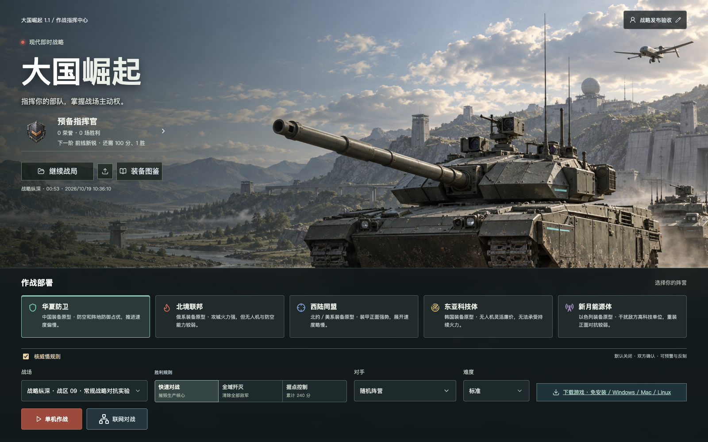
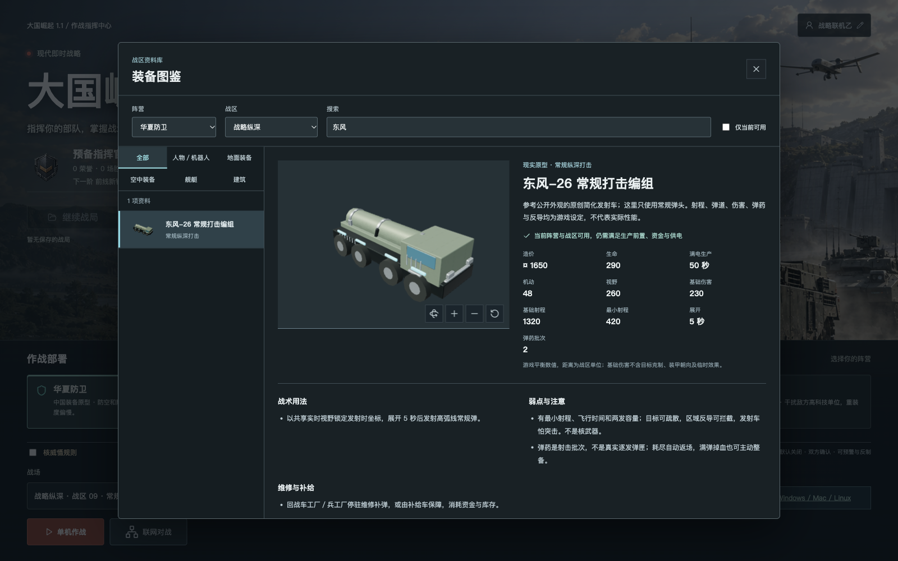
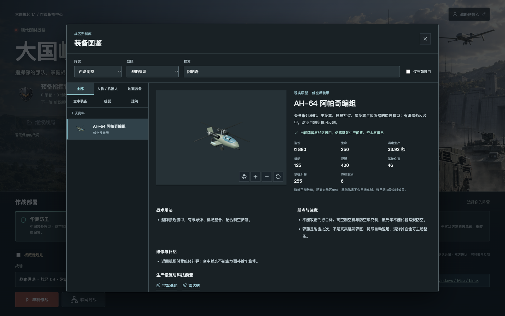
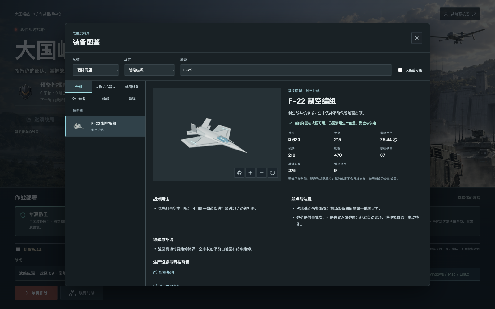
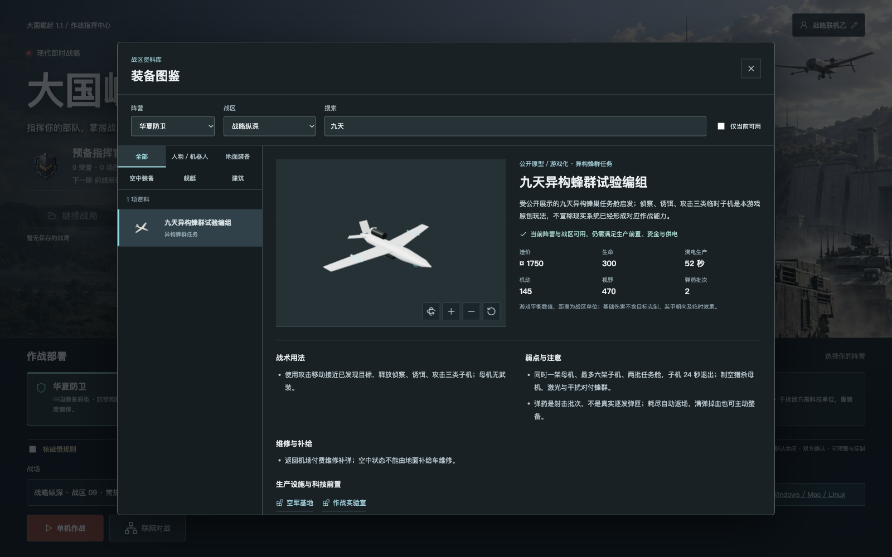
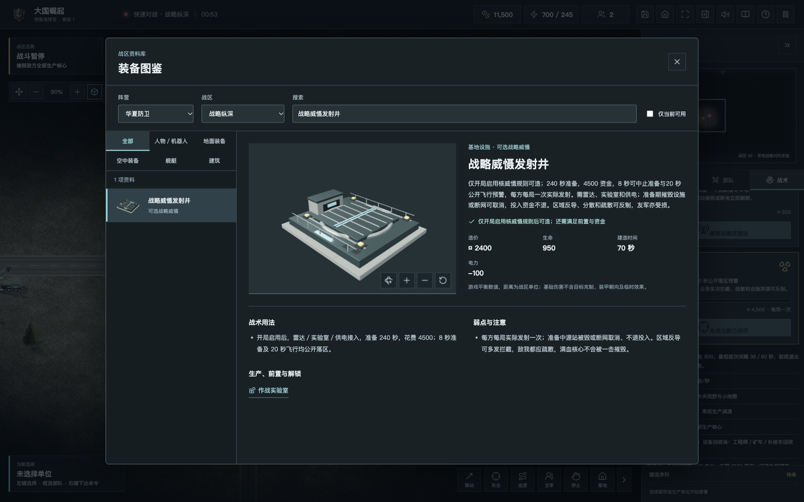
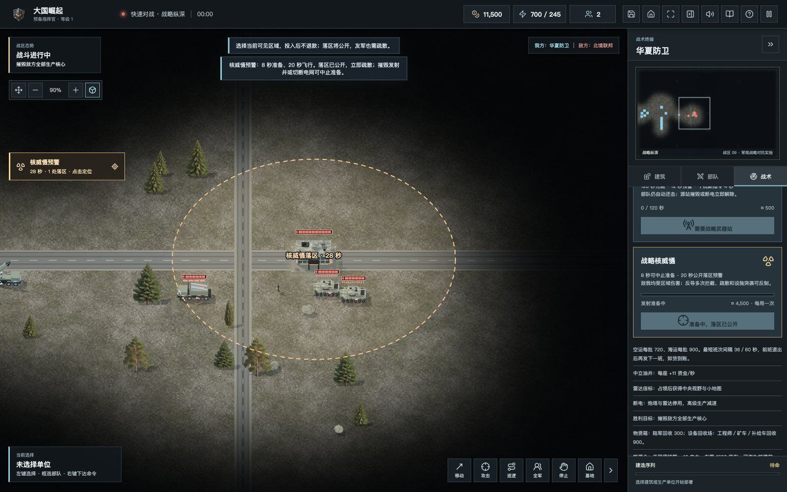
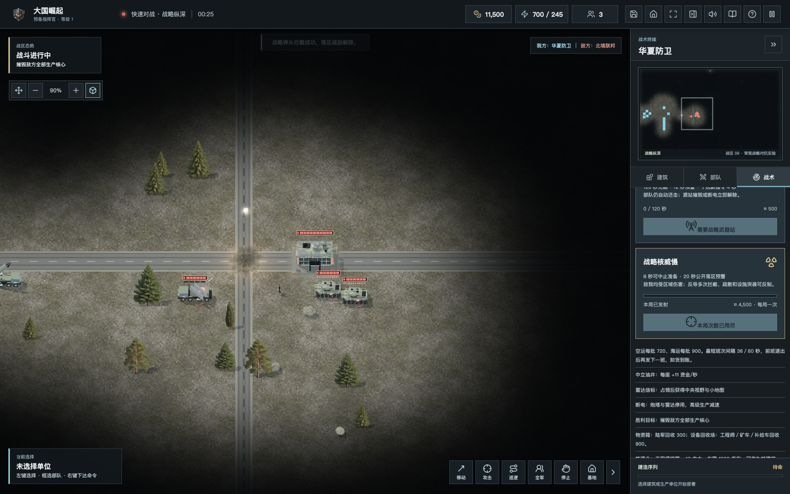
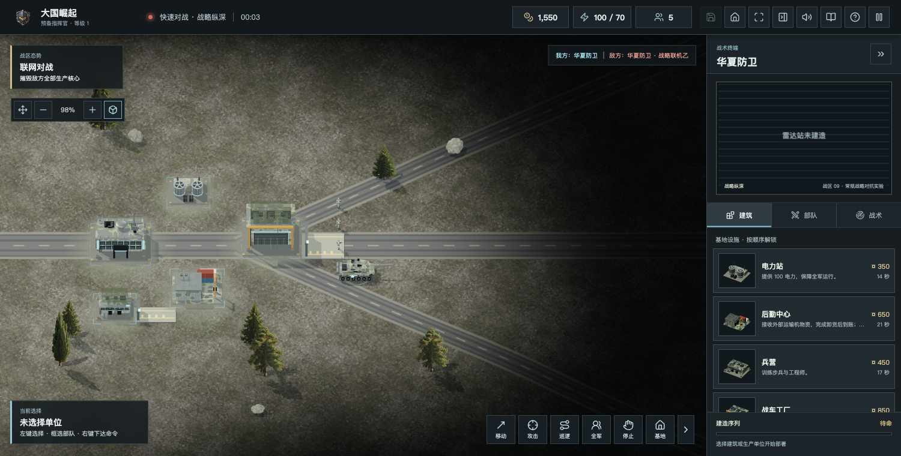

大国崛起 · 1.1 战略威慑更新
东风、九天蜂群来了！我用 GPT 6.1 做的开源 RTS 更新了
陈成 · 2026-10-19
先跟大家报个进度：《大国崛起》1.1 已经上线。这一轮，我继续用 GPT 6.1 / Codex 辅助开发，把前面讨论的现代装备、战略地图和核威慑反制，往真正能玩的方向又推进了一步。GitHub、离线包、桌面安装包和服务器都已更新，完整地址放在文末。
开头还是想认真谢谢 CAI。舰艇返港、运输补给、车辆堵塞、导弹轨迹、间谍与工程师的配合……前面几轮那些很具体的建议，让我不断回到实际战局里检查：这个功能到底是写出来了，还是玩起来真的顺手？也谢谢从国庆那轮更新一直玩到现在、愿意截图和描述问题的朋友。

先用一分钟，回顾它现在能玩什么
上篇 1.0 里，基地建设、独立生产线、陆海空协同、战争迷雾、有限弹药、运输经济、自动补给、返港维修、单机存档、中文男女声、装备图鉴和荣誉系统，已经陆续做了进去。还可以创建双人昵称房间，与朋友联网对战；六方实验战区支持真人和 AI 混合席位。
所以，这次不是重新介绍一遍旧功能。重点只有两个：让装备更有辨识度，让强力武器也必须面对反制。主要体验方向仍是电脑，不把精力分散到手机端。
东风、阿帕奇、F-22、九天：不能只换个名字
东风原型：常规纵深打击，也要有人保护
华夏防卫新增了东风-26 常规打击原型编组，补上独立简化发射车与发射架举升动作。它需要侦察提供目标、停车展开，弹药有限，打击固定落点而不是一直追着目标跑。对手可以机动避让、组织反导，也可以直接打掉发射车和补给线。这里的东风编组是常规单位，不等于下面的核威慑发射井。

阿帕奇与 F-22：看得出不同，也用得出不同
西陆同盟补上 AH-64 阿帕奇原型的武装直升机编组，串列座舱、短翼挂架、主尾旋翼和传感器有了独立结构。它适合越障反装甲，但怕防空和制空机，缺弹、受伤后仍要回机场整备，不能悬在天上无限输出。

F-22 沿用既有制空职责，这次主要补专属轮廓：双发、菱形翼、倾斜双垂尾、进气口和座舱。制空优势不能替代地面占领，有限弹药与机场保障也没有取消。

九天原型启发的异构蜂群：母机后面还有整条链路
华夏的异构任务母机，加入侦察、诱饵、攻击三类子机。它们是有存续时间、能被拦截和干扰的真实游戏单位，不只是围着母机转的装饰。任务舱、数量上限和母机生存都有限制，防空、电子干扰与激光反无人机可以形成不同层次的反制。

看到熟悉的国产装备轮廓，能够在游戏里研究侦察、护航和保障，是不少军迷朋友在意的代入感。但我不希望只靠某个名字就决定输赢：不同阵营都需要有可用的基础职能，也都应该有短板。现实原型用于识别，数值服务游戏，不拿它排现实军力。
核威慑做进去了，但不是按一下就赢
这次新增 6400×4160 的“战略纵深”。三条主路、侧路、山体、镜像资源和三个信标，把侦察、绕后与争夺资源放在一起。新增战略生产职能先限定在这张实验地图里，避免一口气打乱所有旧地图。
核威慑是其中一个可选规则，默认关闭。单机需要主动勾选；双人房间必须双方明确确认。六方模式暂不开放核规则，不会有人进房后才发现规则被偷偷换了。

它需要实验室、雷达、发射井和正常供电，先充能 240 秒，再花费 4500 游戏资金指定当前可见落点。不是随手往战争迷雾里点一个位置，就能拿到免费的全图打击。
下达指令后有 8 秒准备，再有 20 秒飞行。从准备开始，双方就能看到落区和总计 28 秒的倒计时。防守方有时间决定：疏散部队、组织反导，还是趁准备阶段突击发射井、破坏供电与支援网络。

反导也不是无条件保险。原创区域反导车需要雷达、电力、弹药和末段覆盖，四次命中才能拦下一枚。普通防空、激光车和电子干扰，不能代替专用反导；反导车自己也需要保护和补给。

每方每局最多实际发射一次，被拦截也算消耗。准备中被打断不退资金；已经起飞后，再炸掉发射井不会让弹体凭空消失。落地包含友伤和距离衰减，不一发清图：满血指挥中心单次最多损失 45% 生命，其他建筑最多 65%，也没有永久污染区。

我更希望它改变部署和决策，而不是替代整场战斗。基地挤在一起、部队长期扎堆、侦察和电网无人保护，才会让这种威胁真正变得危险。所有计时、伤害和拦截规则都是游戏抽象，不模拟现实核武器参数或操作程序。
画面继续改，也把没做到的说清楚
这一轮继续区分金属、玻璃和涂层，细化反导弹箱、驾驶舱、举升机构与发射井防爆门；烟云增加起伏、密度和透明边缘，尽量减少“几个球堆在一起”的感觉。车辆避让、无人机自主任务、地形接地和情报干扰的修正，也一起进入了新版。
但我不会把这些截图说成照片级画质：人物和不少装备仍需要高精模型、贴图和动作打磨。核预警等新增台词已纳入内置中文男女声，离线也有兜底；联机准备中止、迷雾外拦截的专门语音事件仍待补齐。这些会继续改，不拿“已经有模型”当作“已经足够精美”。
单机、联网和图鉴，这次一起更新
单机可以在新版战略图里练习侦察、展开、突击与反导，图鉴能查看模型、生产前置、弹药、战术用途和弱点。原有存档继续兼容，旧档默认不开核；成长和荣誉也没有借更新重置。
双人房间保留昵称邀请、准备、断线宽限与重连。这次用两个真实浏览器验证了双方确认、同局开战和坦克移动，又在公网验证双人和六方的加入、移动、淘汰与结算。六方仍是独立实验入口：自由对战，不是正式 3v3；每席最多 40 个单位，包含生产队列，服务同时开放一场六方战局。

离线 ZIP 完整解压后打开 PLAY.html，就能玩单机，不含联机服务器。朋友在同一局域网时，可以从源码启动对战服务，共用主机地址；不是把一个 HTML 文件发给大家，就自动变成联机游戏。桌面包继续采用 Tauri，Mac、Windows、Linux x64/ARM64 的本轮构建已完成，但具体麒麟、UOS 和不同硬件还需要实机验证。
更新后，网页玩家请刷新页面，桌面玩家请升级客户端；新旧联机协议不兼容。macOS 目前未完成 Apple 公证，Windows 未代码签名，请正常核对来源与校验值，不要为了运行游戏关闭系统安全保护。服务器仍位于硅谷，延迟和下载速度会受线路影响，国内镜像还在计划里。
技术少说一点：强力技能，先过服务端这一关
游戏仍是原生 JavaScript、Three.js 和 Vite；单机与 Node.js 联机服务复用规则。联网时，客户端负责输入、插值与表现，命中、资源、次数和胜负由服务端判定，再按玩家视野发送快照。公开核预警，不等于顺带公开迷雾里的单位和生产队列。
下面是实际游戏配置的格式化摘录。它表达的是游戏节奏与伤害尺度，不是真实武器数据；准备能否中止、重复指令能否被拒绝、读档会不会重复发射，都还需要各自的逻辑和测试。
export const DETERRENCE = Object.freeze({
charge: 240, cost: 4500,
prepare: 8, flight: 20,
radius: 320, damage: 660,
projectileHP: 120, terminal: 0.55
});这轮本地共有 347 项自动测试、5 项数据库发布检查通过，公网双人、六方短局与下载完整性也已核验。原有玩家数据和战绩已备份保留。但短局跑通，不等于高丢包、大军团、高并发和竞技平衡已经全部达标。
到 2.0，我更想把这些事做扎实
现在发布的是 1.1，不是把所有设想都打包叫作 2.0。下一阶段优先继续精修人物、战车、舰艇、装备材质与动作，同时补 120/240 单位的性能基线；再用真人长局校准 AI 配兵、资源分布与反制成本。
玩法上，希望加入有明确目标的单机挑战、科技路线和更有用的复盘；联网先把六方长局、重连和弱网体验做好，再推进正式组队、匹配与排行榜。更完整的月面能源网络、空天装备和基地扩展仍是规划，微信登录、国内下载镜像、国产系统适配也不会写成已经完成。
试玩、下载和源码，完整地址都放这里
这次地址直接明文列出，方便复制。只想先玩一局，打开在线试玩；想离线单机，下载 ZIP；桌面安装包在下载中心按系统和架构选择。
在线试玩：单机与双人对战
https://43.135.186.21:8443/
六方实验战区
https://43.135.186.21:8443/candidate/
官网下载中心
https://43.135.186.21:8443/downloads/
1.1 免安装单机 ZIP
https://43.135.186.21:8443/downloads/packages/Great-Powers-RTS-v1.1.0.zip
GitHub 开源仓库
https://github.com/chencheng666/great-powers-rts
GitHub 1.1 发行与备用下载
https://github.com/chencheng666/great-powers-rts/releases/tag/v1.1.0
这个游戏，还想和大家一起做下去
尤其感谢 CAI，也谢谢每个认真试玩、愿意把问题说清楚的朋友。你们提出的建议，有些已经变成代码，有些还在排队；我会继续把“做了什么、没做什么、为什么暂时没做”说明白。
这一版最欢迎大家试的，不只是“核打击够不够震撼”，而是：预警时间够不够反应？反导值不值得造？侦察和补给有没有真正影响输赢？碰到 Bug，欢迎带上版本、地图、系统、复现步骤和截图来提 Issue。也欢迎用 Blender、Three.js、程序、测试或清楚授权的原创素材参与共建。
下一轮，你更希望先看到精细建模、单机战役，还是更成熟的组队联机？欢迎在评论里说说优先顺序。把它从一个能玩的原型，慢慢做成值得长期玩的游戏，是我想和大家一起完成的事。
最后说明：本项目是原创、非官方开源 RTS，不是《红色警戒》的官方续作，也未使用其代码、模型、音乐或配音。现实装备名称用于原型介绍，阵营、模型和数值均为游戏化表达。本文插图为游戏界面与图鉴截图；核预警、拦截、落地使用独立受控验收场景，不以宣传插画冒充实战画质。原创：陈成。